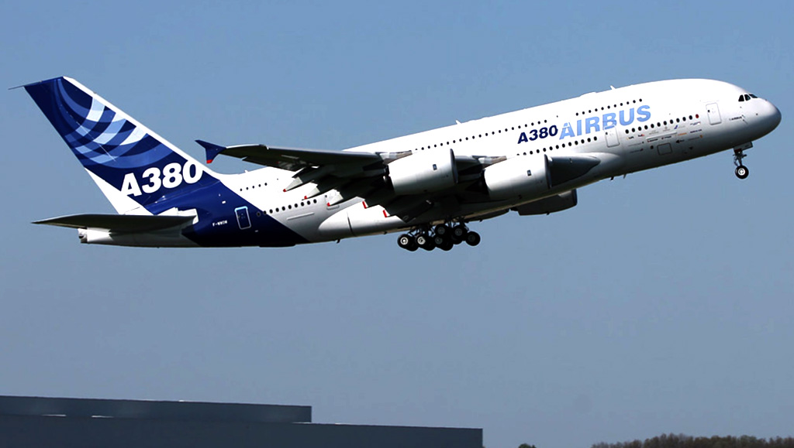

Los aviones

Modelo A380
El Airbus A380 es un avión tetrarreactor fabricado por la empresa europea Airbus (subsidiaria del grupo Airbus Group). Es, hasta el momento, el avión de pasajeros más grande del mundo. Se trata de la primera aeronave de reacción con dos cubiertas a lo largo de todo su fuselaje, a diferencia del Boeing 747, en el que, aunque también tiene dos, la cubierta superior abarca solamente la parte delantera del fuselaje. Dispone de una capacidad máxima de 853 pasajeros.
Datos
El A380, equipado con 4 motores Trent 900, despegó de Toulouse con una tripulación de seis personas, encabezada por el jefe del proyecto, Jacques Rosay. El vuelo duró 3 horas y 54 minutos; más tarde, Rosay diría que había sido «como montar en bicicleta». El 1 de diciembre de 2005 el A380 alcanzó su velocidad máxima de Mach 0,96 (la velocidad de crucero normal es de 0,85).
Es el avión de pasajeros más grande del mundo. Supera de esta manera al ya mencionado Boeing 747, al brindar un área útil de un 49 % más que este último —según el propio fabricante—. Era superado por el avión de carga Antonov An-225 hasta su destrucción a finales de febrero de 2022, sin embargo este no fue producido en serie. Tiene una longitud de casi 73 metros10 y 24 metros de altura, estando su estructura formada en un 40 % de fibra de carbono y otros modernos materiales metálicos. Al disponer de una cubierta doble que se extiende a lo largo de todo el fuselaje, la superficie de la misma alcanza los 478,1 m², casi un 50 % más que la de su principal competidor, el Boeing 747-400, el cual dispone de una superficie de cabina de 320,8 m². En una configuración convencional de tres clases —turista, negocios y primera— el A380 puede albergar a entre 500 y 550 pasajeros. La versión de carga, pospuesta actualmente, disfrutaría de una capacidad de 150 toneladas y un alcance de 10 400 kilómetros.
Wikipedia